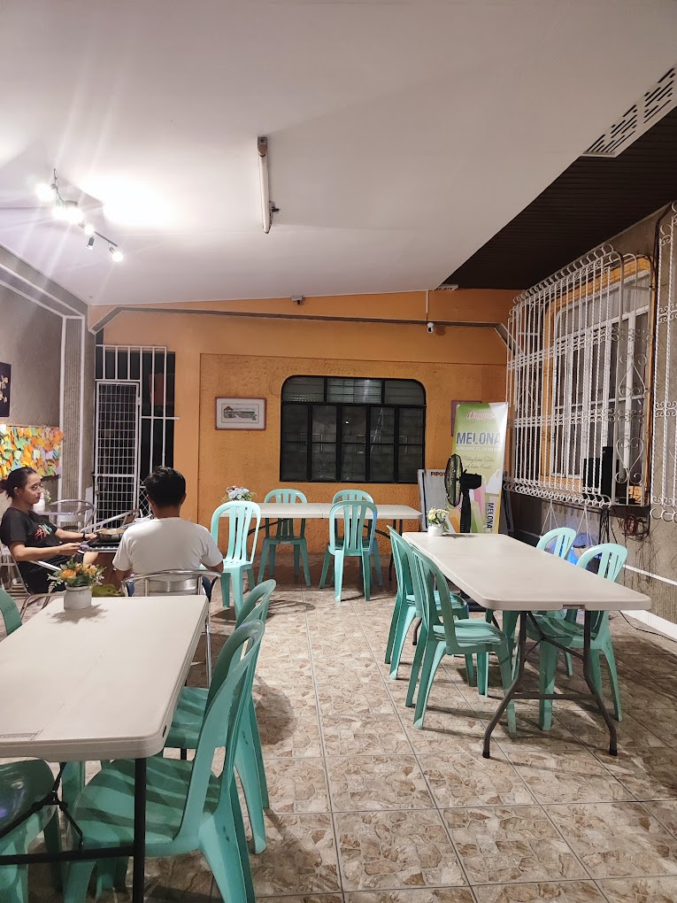

Welcome to Pipoy's Ramyun House
Welcome to Pipoy's Ramyun House, a haven for ramyun enthusiasts in the heart of Sta. Maria, Bulacan.
Step into a world of savory delights where rich broths, perfectly cooked noodles, and a symphony of
flavors come together to redefine your ramyun experience.

Discover Culinary Bliss at Pipoy's Ramyun House in Sta. Maria, Bulacan!
Signature Ramyun Creations:
Appetizers:
Classic Beef Ramyun - Php 180:
Dive into a bowl of comforting beef ramyun, featuring tender slices of beef, springy noodles, and a
broth that whispers of culinary mastery.
Calamari Fritti - Php 150:
Crispy fried calamari rings served with zesty marinara sauce.
Spicy Kimchi Ramyun - Php 200:
Ignite your taste buds with the fiery goodness of our Spicy Kimchi Ramyun. A perfect balance of spice and
tang, this bowl is a culinary adventure you won't forget.
Seafood Ramyun Delight - Php 220:
Indulge in the oceanic symphony of flavors with our Seafood Ramyun Delight. Packed with fresh seafood and
aromatic broth, it's a feast for the senses.
Pipoy's Specialties Beyond Ramyun:
Bibimbap Bonanza - Php 250:
Experience the vibrant medley of flavors in our Bibimbap Bonanza. A bowl of mixed rice, vegetables, and your
choice of protein, topped with a fried egg.
Korean Fried Chicken - Php 220:
Crispy, succulent, and bursting with Korean flavors, our Korean Fried Chicken is a must-try for fried
chicken enthusiasts.
The Place
At Pipoy's Ramyun House, we believe in offering more than just delicious food. Our cozy ambiance and
welcoming atmosphere provide the perfect setting for casual gatherings, solo ramyun adventures, or
intimate meals with loved ones.

Visit us at:
608A, Caypombo, Santa Maria, Bulacan
Operating Hours
Monday – Sunday
3:00 AM - 10:30PM
Embark on a journey of taste and aroma at Pipoy's Ramyun House, where every bowl tells a story of
culinary craftsmanship. Join us and let the warmth of our ramyun and hospitality envelop your senses.
Your ramyun haven awaits
Back